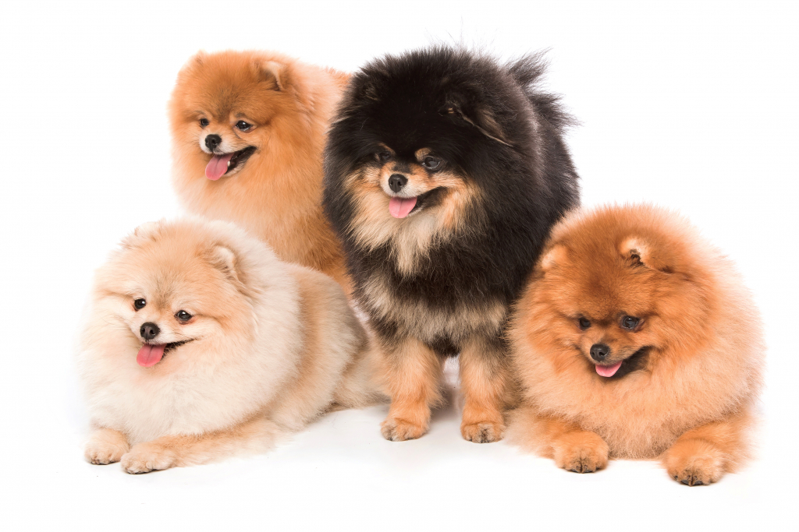

1.
Collie o Pastore scozzese
Carattere:
Guardiano attento, si affeziona alla proprietà e risulta particolarmente docile con i bambini
al punto di diventare il loro difensore anche quando sono solo rimproverati dai genitori.
È anche un grandissimo giocherellone, è intelligente nel giocare e apprende facilmente i giochi con la palla.
Generalmente dimostra facilità d'apprendimento ed è capace di affrontare senza emozioni troppo violente qualsiasi
tipo di circostanza nella quale si trovi, merito anche di una spiccata fiducia nelle proprie possibilità e anche
se ci vuole pazienza a fargli imparare i comandi, una volta imparati non li scorda più. Grazie a queste
caratteristiche è stato impiegato come cane da difesa e polizia in Francia e Germania, ma anche come cane-guida per i ciechi.
Per ulteriori informazioni clicca qui.
2.
Siberian Husky
Carattere:
Allegro e giocherellone, dignitoso e orgoglioso, è a volte gioviale,
ma soprattutto molto socievole con tutti, cani e persone: può essere
infatti un ottimo compagno di giochi per i bambini. Benché sia un po'
testardo, come tutti i cani nordici, può essere educato, purché in tenera età.
Nonostante il carattere amichevole, è molto indipendente, non semplice da
allevare e ha un forte istinto predatorio nei confronti di piccoli animali domestici e non.
L'Husky è famoso per le sue capacità vocali e comunicative: infatti è capace di compiere una
grande quantità di suoni e inoltre ha la fama di "chiaccherone".
Per i suoi tratti caratteriali, il Siberian Husky tende a trovarsi un determinato ruolo
all'interno della famiglia che lo sta adottando, poiché la considera quasi come fosse un branco.
Per tale motivo, l'animale si sottometterà più a colui che riterrà essere il suo capobranco,
mentre con gli altri componenti sarà un po' meno "rispettoso". Per questi motivi bisogna educarlo
in maniera ferma, ma estremamente gratificante, perché è molto intelligente e sensibile: questa
sua caratteristica ha fatto nascere nelle persone l'idea che si tratti di un animale testardo
e indipendente. La sua intelligenza, la sua mansuetudine e il suo desiderio di affetto fanno di
lui un compagno gradevole e un lavoratore pieno di buona volontà.
In particolare nei primi anni di vita, bisogna evitare di separarlo dal padrone e di farlo stare
da solo, anche per brevi periodi. Oltre a soffrire di solitudine, il suo carattere potrebbe risentirne.
Per ulteriori informazioni clicca qui.
3.
Golden Retriever
Carattere:
Il temperamento del Golden retriever è un tratto distintivo della razza
ed è descritto nella norma come "gentile, amichevole e sicuro di sé".
I Golden retriever sono buoni animali domestici in famiglia, in particolare
grazie alla loro pazienza e giocosità con i bambini. Non sono cani legati
esclusivamente a una sola persona e sono generalmente altrettanto amabili
sia con gli sconosciuti sia con i volti familiari. La loro disposizione
affidabile e gentile li rende cani poco adatti alla guardia. Ogni forma di
aggressione non provocata o di ostilità nei confronti sia della gente, di
cani o di altri animali, nel ring o all'interno di una comunità, è considerata
inaccettabile in un Golden retriever e non è in linea con la personalità della
razza. Un Golden retriever non deve essere eccessivamente timido o nervoso.
Il tipico Golden retriever è calmo, docile per natura, con un entusiasmo eccezionale.
I Golden sono anche noti per la loro intelligenza. I Golden retriever vanno d'accordo
con altri cani, gatti e la maggior parte del bestiame. Sono particolarmente apprezzati
per il loro alto livello di socialità verso le persone, la calma e la volontà di imparare.
Per ulteriori informazioni clicca qui.
4.
Volpino di Pomerania
Carattere:
Questo cane, seppure di piccola taglia, è molto robusto, audace e temerario, qualità ereditate dagli spitz tedeschi
di taglia maggiore, che venivano usati come cani da guardia dai carrettieri tedeschi. Pur essendo un cane da
compagnia viene annoverato tra i cani da guardia, poiché è spesso utilizzato come "cane sentinella", infatti è in
grado di allertare i cani da guardia veri e propri grazie alle sue ottime doti uditive. È molto attaccato al padrone,
che difende a tutti i costi, non temendo niente e nessuno. La sua rara intelligenza ne ha fatto spesso anche un cane
"da circo" poiché è in grado di imparare in fretta qualsiasi esercizio.
Per ulteriori informazioni clicca qui.

5.
San Bernardo
Carattere:
Come tutti i molossoidi, è sempre molto attaccato al proprio padrone (con il quale resta cucciolo
per tutta la vita) e a coloro che considera amici, particolarmente ai bambini con i quali ha un ottimo
rapporto. È inoltre un cane molto socievole, con una forte personalità ed è noto per il suo carattere
equilibrato. Determinato, pronto alla guardia e al controllo del territorio (senza essere mai
aggressivo con l'uomo avendo praticamente cancellato con la selezione multisecolare l'istinto predatore),
è dotato di una struttura estremamente poderosa (i maschi possono superare anche i 100 kg), ed è perciò
in grado di essere un valido cane da guardia ed avvisatore con fulminea percezione del pericolo e ottima
reattività nervosa. Ancora oggi, se addestrato, può svolgere al meglio i suoi antichi compiti di cane da
soccorso in montagna. La sua resistenza al freddo ed alla fatica in altitudine sono proverbiali.
Eccellente anche come cane da catastrofe e per la Pet therapy.
Per ulteriori informazioni clicca qui.